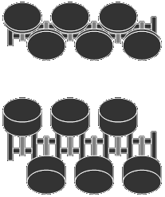

GREPVR6
This tiny web site is a journal (or a blog) of my experiences with my VW VR6 car as well as a little "leaflet" about the VR6 world.
None of what you look at would be here if I did not buy my first VW GTI — F1V.
FEW LINES ABOUT THE ENGINE
VR6 is an engine configuration developed by the Volkswagen Group. It is similar to the V engine, but with the cylinders offset from each other and tilted by 15° instead of the usual 60°. The name, VR6 comes from a combination of Vee and the German word Reihenmotor. The combination of the two can be roughly translated as "in-line Vee."

The VR-6 was specifically designed for transverse installation in front wheel drive vehicles. By using the narrow 15° VR6 engine, it was possible to install a six-cylinder engine in existing Volkswagen models. A wider V6 engine of conventional design would have required lengthening existing vehicles to provide enough crumple zone between the front of the vehicle and the engine, and between the engine and the passenger cell.
The narrow angle between cylinder banks also allows just two camshafts to drive all of the valves, and a single cylinder head to be used. This simplifies engine construction and reduces costs.
The VR6 was used by Volkswagen in:
- VW Golf III
- VW Passat (35i)
- VW Vento
- VW Corrado
- Bus T4
- VW R32
- VW Touareg
- VW Sharan/SEAT Alhambra/Ford Galaxy
- Škoda Octavia
(source: answers.com)